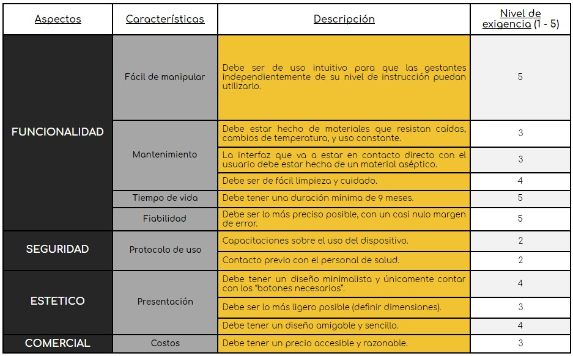

[1] J. Kolarik, M. Golembiovsky, T. Docekal, R. Kahankova, R. Martinek, and M. Prauzek, “A Low-cost Device for Fetal Heart Rate Measurement,” IFAC-PapersOnLine, 2018, doi: 10.1016/j.ifacol.2018.07.116.
[2] B. Castañeda, Aplicaciones de tele-ecografía en zonas rurales. Pontificia Universidad Católica del Perú, 2017.
[3] Red Idi, Desarrollo de un Tele-ecógrafo adaptado a zonas rurales de la Amazonía peruana para aplicaciones de telemedicina. 2019.
[4] Guías de Manejo de las Complicaciones en el Embarazo. Panamá: Ministerio de Salud, 2009.
[5] ABN Fetal Stethoscope PS-181-BK Rp 200.000. 2012.
[6] O. García and B. Arana, Monitoreo Fetal, Basado en Evidencia. Grupo de Especialistas del Hospital de Gineco Obstetricia - IGSS, 2014.
[7] Equipo Ordesa, Los movimientos fetales de tu bebé. 2020.
[8] N. Barrena M. and J. Carvajal C., “Evaluación fetal intraparto. Análisis crítico de la evidencia,” Rev. Chil. Obstet. Ginecol., 2006.
[9] K. H. Tan, R. M. D. Smyth, and X. Wei, “Fetal vibroacoustic stimulation for facilitation of tests of fetal wellbeing,” Cochrane Database of Systematic Reviews. 2013, doi: 10.1002/14651858.CD002963.pub2.
[10] W. Schmidt, R. Boos, J. Gnirs, L. Auer and S. Schulze, Fetal behavioural states and controlled sound stimulation. 1985.
[11] "Fetal Monitoring", Stanford Children's Health, 2020. [Online]. Available: https://www.stanfordchildrens.org/es/topic/default?id=fetalmonitoring-90-P05558. [Accessed: 19- Sep- 2020].
[12] Tecnomed 2000, Doppler Fetal portátil con pantalla y resistente al agua.
[13] Control externo e interno de la frecuencia cardíaca fetal. Catéter Intrauterino.
[14] A. Stuart, P. Kunovski, and S. Samuels, “Movement sensor and garment,” 2019.
[15] H. Jiexin, “Remote fetal monitoring method and system,” 2015.
[16] N. Amrish, A. Diane Davis, N. Vilasini, and T. Sihem, “An apparatus for acquiring signals from a pregnant subject,” 2020.
[17] K. Gladkova, A. Gus, N. Tetruashvili, and E. Kostjukov, “Method for umbilical vessel coagulation in foetus with acardia in reversed arterial perfusion syndrome,” 2014.
[18] P. H. Crispín Milart, C. A. Diaz Molina, I. Prieto-Egido, and A. Martínez-Fernández, “Use of a portable system with ultrasound and blood tests to improve prenatal controls in rural Guatemala,” Reprod. Health, vol. 13, no. 1, pp. 1–8, 2016, doi: 10.1186/s12978-016-0237-6.